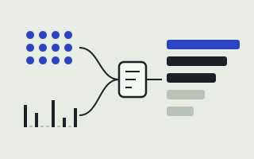
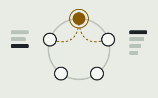
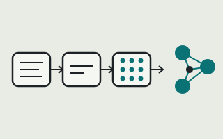
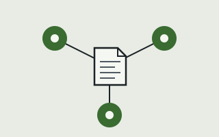

Projects
Five things I've built, from storage internals to the interface on top. Each color matches that project's node on the home page ring.
Showing all 5 projects.
-

HERMES
Hybrid Embedding Retrieval with Multi-stage Evaluation and Scoring
A multi-stage search service over 10k+ code artifacts. Dense and sparse retrieval run side by side, a reranker orders the merged candidates, and the whole pipeline is instrumented for performance. Recall@10 improved by about 25%.
Indexing runs offline, separate from the online REST API, which is what keeps queries low-latency.
Embeddings, sparse retrieval, reranking, REST APIs, performance instrumentation
-

Distributed key-value store
Storage internals in Java
A key-value database across 5 storage nodes. Consistent hashing places keys, a write-ahead log and in-memory cache sit on each node, and replication with leader election keeps data reachable when a node fails. It held 99.9% request availability.
Java, consistent hashing, write-ahead logging, replication, leader election
-

OriginHub
Startup intelligence platform, Oct 2025 - Dec 2025
Airflow pulls in startup news, LLMs summarize it and write SWOT and competitor analysis, and embeddings land in Weaviate for semantic search. Multi-agent RAG runs on GKE.
ML CI/CD gates models on evaluation and bias detection before retraining on Vertex AI, with Prometheus and Grafana watching production.
Airflow, Weaviate, GKE, Vertex AI, Prometheus, Grafana
-
AdsCanvas
Privacy-first advertising console
A Turborepo monorepo in strict TypeScript. 12 reusable web components cover 6 end-to-end campaign workflows and an AI-assisted ad creation flow. 50+ Vitest and Playwright tests guard it, and it scores 90+ on Lighthouse for performance and accessibility.
React, TypeScript, Node.js, GraphQL, REST, Vite, Turborepo, Vitest, Playwright
-

AdPilot
AI advertising campaign copilot
Three agents split the work: one writes ad copy, one picks audiences, one evaluates campaigns. RAG over brand documents keeps the copy grounded, responses stream, and dashboards tracked 1,000+ simulated campaign requests.
React, TypeScript, Java, Spring Boot, PostgreSQL, Redis, OpenAI API, MCP